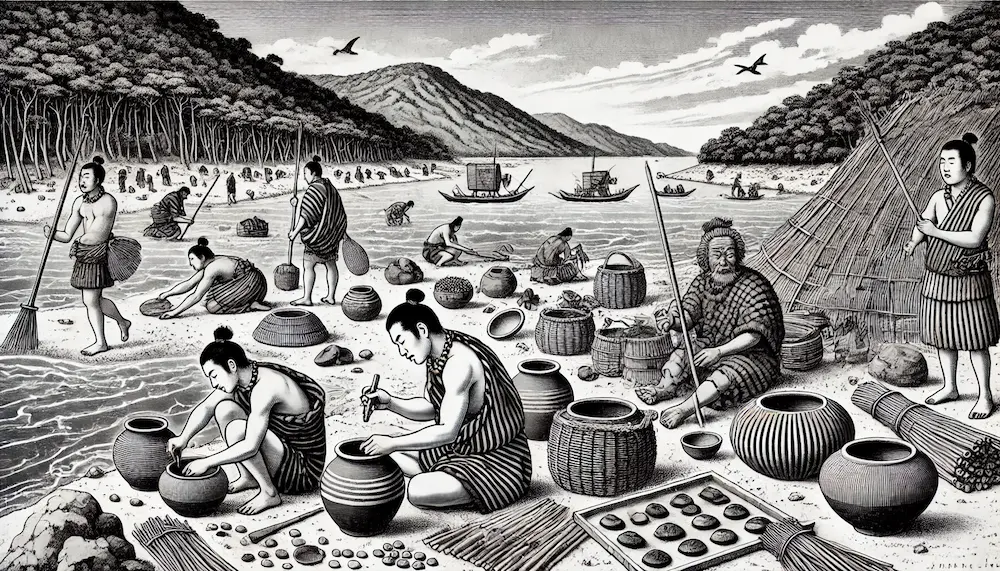
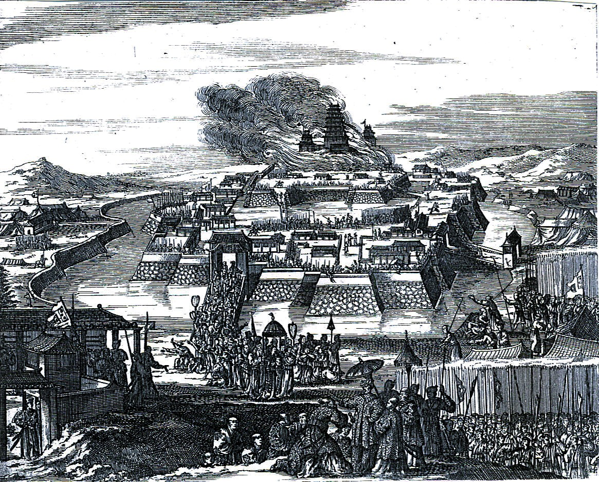
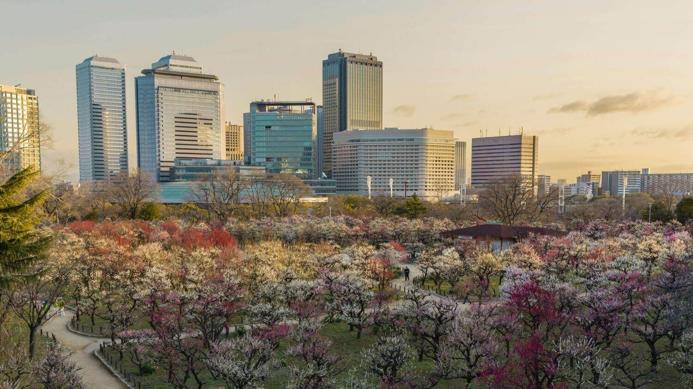

Entre em uma região de vida noturna agitada, culinária deliciosa e moradores locais simpáticos
Geografia de Osaka
Osaka, situada na região de Kansai, é a terceira maior cidade japonesa e carrega a fama de um dos destinos comerciais mais procurados do país. Osaka, situada na região de Kansai, é a terceira maior cidade japonesa e carrega a fama de um dos destinos comerciais mais procurados do país.Osaka, situada na região de Kansai, é a terceira maior cidade japonesa e carrega a fama de um dos destinos comerciais mais procurados do país.Uma grande cidade portuária, reconhecida como o centro comercial na ilha japonesa de Honshu, Osaka é ideal para empresas que estão buscando se expandir para a região. Chegou a ser o centro político, econômico e cultural do Japão, e foi a primeira capital do Japão durante o século XVI. Osaka foi uma cidade de administração imperial, e possui até hoje muitos mausoléus e castelos de imperadores. Uma das construções mais famosas atende pelo nome de “Castelo de Osaka”, e foi construído no século XVl pelo imperador Toyotomi Hideyoshi. O edifício é um dos símbolos da cidade e já passou por várias reformas para manter a bela arquitetura intacta
Um pouco da História local...
O período em que Osaka foi a capital (período Miyako) foi mais longo que o de Tóquio (período Edo), época em que Osaka ficou conhecida como a “cozinha da nação”, após o reinado de Toyotomi Hideyoshi. Sakai, que era uma cidade industrial, tornou-se a Zona Industrial Sakai-Senboku Waterfront, e os remanescentes da cidade mercantil ainda são vibrantes nos distritos comerciais de Umeda e Honmachi,
Originalmente fundada durante a Era Edo, está entre as cidades mais antigas do país, havendo vestígios de palácios imperiais desde o século IV, incluindo o mundialmente famoso Ōsaka-jō (ou "Castelo de Osaka", em tradução para o português), erguido no século XVI e um dos mais importantes símbolos da cidade.
Turismo
Pontos Turísticos Que Eu Mais Quero Ir:
Castelo de Osaka
O Castelo de Osaka é, sem dúvida, o marco mais proeminente de Osaka e é testemunha das sangrentas lutas de poder que levaram à fundação da era Edo, em 1603. Enquanto sua história data de 1583, a sua principal torre, que é o ícone do castelo, só foi reconstruída em 1931. Essa história ainda é celebrada e lembrada, pois a queda do castelo corresponde aproximadamente ao início do Período Edo, período pacífico e próspero para o Japão. Dentro do castelo, há um museu que contém informações sobre a história do Castelo de Osaka. O Castelo de Osaka está cercado por 106 hectares de parque aberto, o que o torna um refúgio agradável das áreas mais urbanizadas da cidade. Junte-se aos corredores ao redor do fosso exterior do castelo, ou pegue um barco turístico gozabune para ter outra vista do castelo. Com uma abundância de cerejeiras, pessegueiros e ameixeiras, a flora diversificada promete belas paisagens na primavera e no outono.
Jardim Botânico TeamLab
Localizado dentro do Parque Nagai, o Jardim Botânico apresenta uma variedade de ambientes botânicos que se transformam ao longo das diferentes estações do ano. Durante a noite, o espaço ganha vida com a instalação artística criada pelo teamLab, um coletivo internacionalmente reconhecido. Os visitantes são imersos em um mundo colorido e surreal, onde as obras interativas conectam-se harmoniosamente com os jardins circundantes. A visita proporciona uma experiência visualmente estimulante e envolvente. Nela, é possível explorar os espaços iluminados em meio à natureza exuberante e interagir com as instalações digitais projetadas pelo talentoso coletivo artístico.
Edifício Umeda Sky
O ultramoderno Edifício Umeda Sky é um ponto de referência da subprefeitura Kita de Osaka. Ele foi erguido em 1993, ao final da bolha econômica no Japão.Depois de explorar o deque de observação, vá ao subsolo e passeie por um mercado que recria o Japão do início do século XX. O complexo foi originalmente concebido como uma série de quatro arranha-céus conectados no topo. Projetado pelo renomado arquiteto Hiroshi Hara, os dois arranha-céus que compõem o Edifício Umeda Sky foram concluídos em 1993. O Observatório do Jardim Flutuante liga as torres e é a principal atração do complexo.